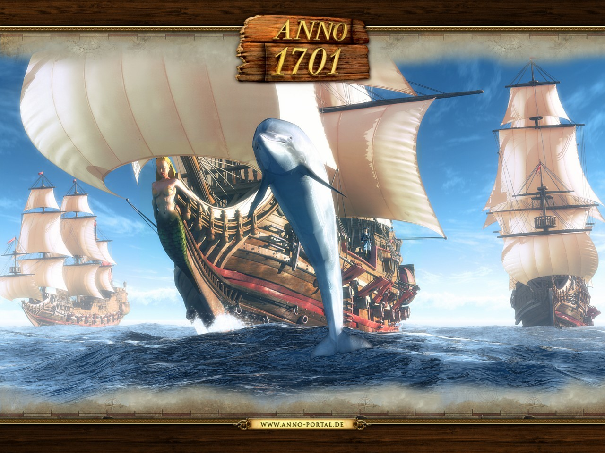
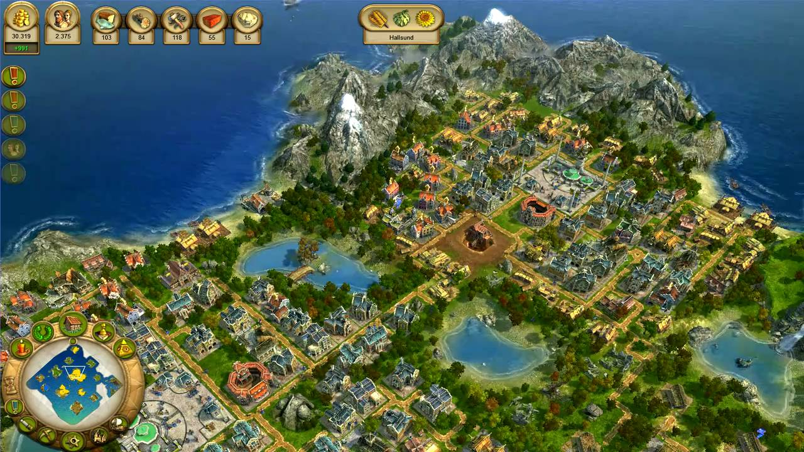

Über das Spiel
Als Anno 1701 im Jahr 2006 erschien, war der Sprung von 2D- auf 3D-Grafik enorm. Die Inselwelten wirkten lebendiger, Gebäude detaillierter und die Atmosphäre deutlich realistischer. Gleichzeitig blieb das typische Anno-Feeling erhalten.
Gameplay-Neuerungen
Anno 1701 führte ein ausgearbeitetes Wirtschaftssystem ein, das später als Grundlage für viele Nachfolger diente. Besonders beliebt waren die animierten Städte und die zahlreichen diplomatischen Optionen mit KI-Herrschern.
Warum Fans 1701 lieben
- Wunderschöne, warme Grafik
- Sehr stimmige Musik
- Perfekte Mischung aus Aufbau und Herausforderung